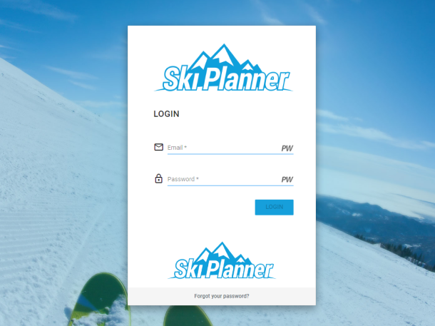
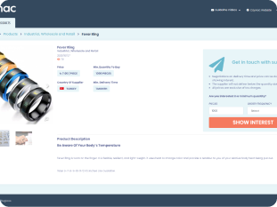
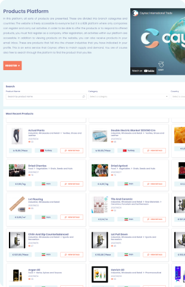

- EN
- NL

"Our communication goes well, and our weekly meetings work for me. Bugloos for me is the right partner
to
develop Ski Planner and to keep on progressing in functionality in the future. I think Bugloos is a
professional company and you are always trying to improve your efficiency to your customer/partners."
Daniel Schinkel
CEO of Snow Sports Center Utrecht
UI/UX
Web Development
Ski planner
Snow Sport Center Utrecht is one the largest indoor ski simulator center and ski schools in the world and
is
filled with endless artificial dry slopes. One of the biggest challenges for an indoor ski school is
managing bookings, lesson levels, and payments. As the owner & CEO of Snow Sports Center Utrecht, Daniel
Schinkel was looking for a booking service to help him increase and manage his organization's bookings. He
needed an application to help his clients book more efficiently which was the early requirement.
Together as Bugloos, we found the best possible way to make Snow Sport Center Utrecht grow and digitalize.
As a result, we launched the Ski Planner application, a platform specifically designed to maximize
efficiency in 3 environments for Admins, Ski schools, and Clients who can easily see available booking
options and book their appointment!
One of the most interesting things about this project is its Stakeholder who never stops progressing and
welcoming our ideas to develop new features to achieve his goals. Regarding that Ski Planner is now
available with lots of features such as:
Book multiple persons at the same time
Adjustable system user's role permissions
Multiple payment methods and gateways (Mollie and Stripe)
Worldwide registration of Ski Schools and Clients


UI/UX
Web Development
Caynac
"Caynac online platform makes international trading accessible to all companies."
Caynac is an automated business-to-business (B2B) platform that makes it possible for companies to
offer
their products internationally and to search online for foreign products. Caynac focus is on bringing
international companies together so that they can trade.
The owner and CEO, Ali Yasar, after 3 years of studying and investigating online marketing, decided to
make
his dream come true and asked Bugloos to help him during this journey. After Bugloos project discovery, +
analyzing the competitors, brainstorming, and finally implementing, Caynac was introduced.
Caynac consists of 2 environments: A portal for users to register and benefit from Caynac's services, and
an
admin panel to manage the platform and the users.
As a user, you can choose to be a seller or a buyer on the Caynac platform.
If you choose to be a buyer, you will have access to the international product database for free. You
only
need to register, then you can search for specific products from different branches and countries
easily.
You will be able to:
Free access to the international database.
Search for products without obligation.
Receive periodic emails for interesting products.
Get Back


2022 Bugloos